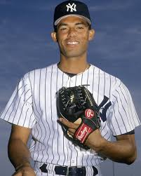

Eres Mariano Rivera, pitcher estrella de los Yankees. Estas en el ultimo inning de la serie mundial a 2 outs
de conseguir la victoria. Tus lanzamientos principales son la bola rapida, slider y curva.

El bateador
Al bat llega Freddie Freeman, uno de los bateadores mas fuertes de los Dodgers. Por suerte, estudiaste su
estilo de bateo y sabes que es muy fuerte contra el slider, pero debil contra la curva. Tambien sabes que
tirando una rapida o un cambio la jugada podria ir para los 2.